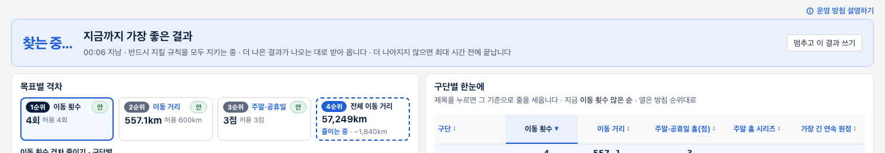
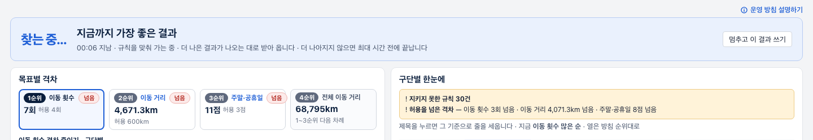
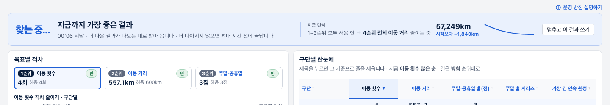
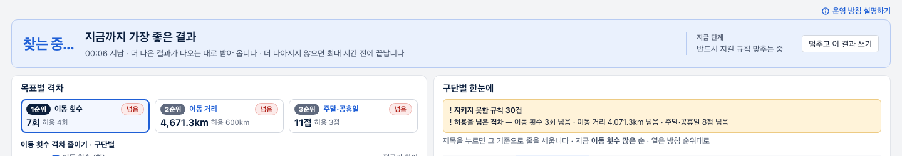
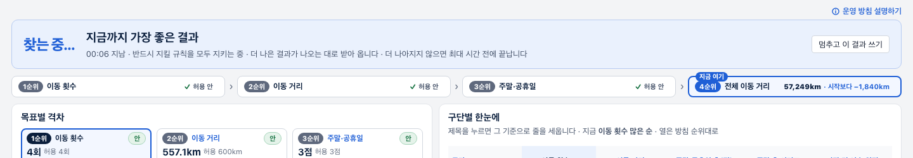
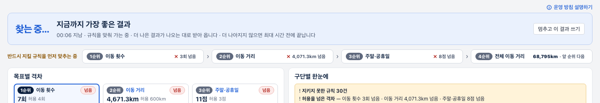

각 안마다 위: 1·2·3순위를 모두 맞추고 4순위를 줄이는 중 · 아래: 아직 규칙을 맞추는 중
「목표별 격차」의 칸 셋 옆에 4순위 칸을 더함. 지금 줄이는 중이면 파란 점선 테두리와 「줄이는 중 · −○km」(시작보다 줄어든 거리)


파란 머리글 안에 엔진이 지금 붙든 순위를 글로. 4순위 단계면 거리 숫자와 줄어 온 모양(작은 선 그림)


1→2→3→4순위를 한 줄로 잇고 지금 붙든 칸에 「지금 여기」. 순위마다 ✓ 허용 안 / ✗ 얼마 넘음

